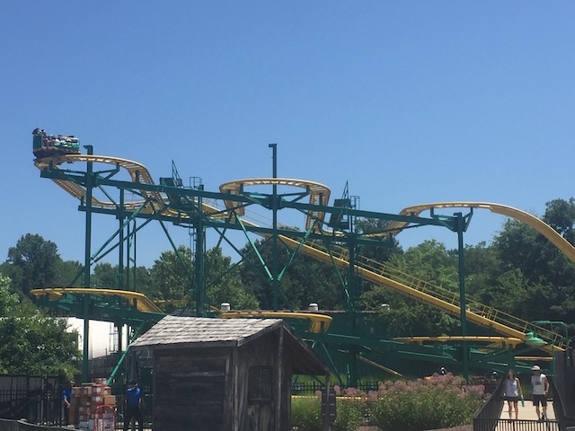

| |
Ragin Cajun Review

We're here at Six Flags America, where we're going to be reviewing their spinning coaster. Ragin' Cajun. Fun fact, this ride was originally at Six Flags Great America, and I got to ride it there first before riding it at Six Flags America. We get into our cars and away we go. We roll through a turn and head up the lifthill. You head off the lifthill and into a turn. You're not spinning yet. We'll get to that later. So right now, it's just like an ordinary Wild Mouse. The Switchbacks arn't that great as there's not that much whip and the laterals arn't comfortable. After the switchbacks, you head into a small drop and back up the small hill. This is fun. We then head into the biggest drop of the ride. WEE!!!! We then head into some double up thing which sadly, but not suprisingly, has no airtime. We then jolt around another turn and head into the second set of switchbacks. However as we head straight into them, we begin to spin. And on Ragin Caujun, you spin FAST!!!!!!!!!! HOLY CRAP!!! YOU SPIN SO F*CKING FAST ON THIS RIDE!!!!!! I actually couldn't see where we were going. Now THAT makes for a good spinning mouse ride. After a couple switchbacks, we head through one last turn, and then we head into a small drop. That small drop is actually f*cking insane thank's to the ride's insane spinning. I seriously think that this ride smoked crack because it was awesome. You then spin through a couple bumps. Then you head through one last turn and head into the brakerun. Stacking here is fine since your car is still spinning and considering how fast we were spinning, we've got a while before our spinning dies down. Ragin Cajun is a FANTASTIC spinning mouse ride that really knows how to spin. I'm so happy that this ride spins just as much in Maryland as it did in Illinois. If you're a fan of Spinning Mice, or anything spinning related I'd recommend riding it if the line isn't huge (It's Six Flags America. You should be fine).
7/10
Location: Six Flags America
Opened at Six Flags Great America in 2004
Relocated to Six Flags America in 2014
Built by: Reverchon/Zamperla
Last Ridden: July 22, 2019
I have ridden this exact same ride at the following parks.
American Fairs
Coney Island
Mount Olympus
Tivoli Friheden
Ragin Cajun (Six Flags America) Photos

Ragin Cajun (Six Flags Great America) Photos


Home
|